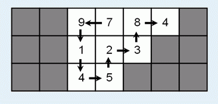

You have a maze with obstacles and non-zero digits in it:

You can start from any square, walk in the maze, and finally stop at some square. Each step, you may only walk into one of the four neighbouring squares (up, down, left, right) and you cannot walk into obstacles or walk into a square more than once. When you finish, you can get a number by writing down the digits you encounter in the same order as you meet them. For example, you can get numbers 9784, 4832145 etc. The biggest number you can get is 791452384, shown in the picture above.
Your task is to find the biggest number you can get.